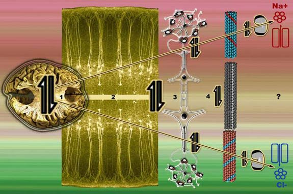

SECTION 2 : DIPOLE CORRELATES WITH BRAIN STRUCTURE AND FUNCTION
SECTION ABSTRACT
This section is technically easy in comparison to the others. I introduce the theory fairly rapidly by presenting a table showing that all the major features of dipoles have cortical correlates, and a series of images revealing the visual similarities between cortex and dipoles.
From there I introduce one of the major historical mysteries behind the dipole puzzle, the 1970’s roger sperry neuroscience which emerged from splitting brain hemispheres.
Then follows a summary evidence breakdown of the left and right hemisphere function and derive that there is a general systems pattern of reversed function the further cortex goes from midline to temporal lobe. I make the case for looking at cortex brain structure more seriously as an electromagnetic system of dipole opposites with temporal lobes as poles.
I put in a technical section to see if neuron components can build the system structures necessary for the theory by taking a detailed look at the microtubule numbering system, finishing with what a dipole theory has to say about the entire cortex structure from atomic scale upwards.
The final summary points out how Section 2 covers 6 of the 10 proposed features of dipoles.
DIFFERENCES BETWEEN BRAIN AND STANDARD DIPOLES
The cortical dipole differs from standard dipoles in many ways.The brain has an electromagnetic structure without necessarily being much like anything physicists have ever come across, It is probably the most complex dipole in the universe possessing field lines that are frozen in genetic time. It is a highly complex biological dipole, sealed and compressed within a confined space, and developed over non mammilian brain structures. Brain structure also differs from a dipole by being a semi-complete sheared and twisted sphere which is involuted with non dipole related structures and convoluted with non dipole related appendages. There is also the walnut appearance of the cortex. This can be explained as a manifestation of Magnetic stripe domains, due to the proposed magnetite/lipid ferrofluid coating the cortex. The cortex is split at the longitudinal fissure. This split can be explained consistent with dipole features as a domain wall. A line where no magnetic forces exist.
SUMMARY OF BRAIN SIMILARITIES WITH DIPOLES
Before getting into the more technical aspects of this theory, it would probably be helpful if I show how many correlations brains and dipoles have. I will explain each one following the table. If you unsure of what these dipole features are click here : Features of dipoles
| |
DIPOLE FEATURES |
BRAIN |
| |
Field lines |
Callosum axons |
| OBVIOUS |
Midline Symmetry |
Corpus Callosum |
|
Domain wall |
Longitudinal fissure |
|
Toroidal structures |
Saggital sinus, indiseum grisum, Callosum (tensor) |
| LESS SO |
Torque / Spin |
Yavoklevian, Cartoid supply, Cortical folds |
|
Frequency reduction from mid axis to pole |
Audio at poles, vision at midline. |
|
Field reversal in each side |
Neurons, receptors and neurochemicals are reversed |
| HIDDEN |
Divergence / Convergence |
Neuropsychology opposite in hemispheres |
|
Polar assmmetry |
Music + language, Functional asymmetries. |
| |
Polarity at Poles |
Na+ depolarizes right temporal, Cl- Hyperpolarizes left |
Some of the brains dipole features were obvious to me from looking at the callosum axons from a top view, where both field lines and toroidal structure are evident. However i was already aware that there was what seemed like a reversal of function in the neuropsychology of brain hemispheres, that could almost be seen as positive and negative in nature.

The classic component shapes and attributes of the Dipole are the Toroidal “donuts” which occur in the middle. The toroid is present many times over within the limbic system, venous return, and the white matter of the outer brain itself. LINK Dissection reveals the Corpus Callosum shows clearly a space which fits the expected place to find Toroid structure of a Dipole. In blue the corpus callosum mirrored supports a tube.

From left to right. A composite image showing how opposite electric charges with iron filings can produce shapes similar to brain structures. (middle and last)
HIDDEN DIPOLE FEATURES
THIS IS A SUMMARY OF THE PAPER DIPOLE NEUROLOGY : CONCEPT AND INTRODUCTION
FIELD REVERSAL AND DIVERGENCE CONVERGENCE
In 1970’s Roger Sperry a Neurosurgeon treating epilepsy had to perform an operation which involved cutting the connections between the two sides of the brain. A Cerebral Calossal Commissurotomy and also a WADA Procedure (closing of blood flow to one brain hemisphere). Previously unseen and completely opposite human neurological cognition were observed from the left and right sides of the brain

From roger sperry epilepsy research. When the right hemisphere is damaged patients (right hemisphere injured) only drew the components of the stimulus. When the left hemisphere is damaged patients drew the overall shape of the navon. This spurred a lot of subsequent research into brain laterality at every conceivable level.

The research continued from simple diagrams to psychology level, reveal that many lateral functions in outlook methods and approach appeared to be complete antithesis of each other. (diagram above) These qualities would appear to be as opposite as you would get. Some of them are actually definitions used in Complex systems theory to define the emergent properties which meet up to be opposing factors in complex systems : Sequential, Linear, Ordered are the reverse of Random, Dynamic, Chaotic. However the problem with the evidence from epilepsy research is that the brain’s connections had been split completely, although there was obviously a highly revealing opposite function, it was not a true representation of how the brain operates. The more well defined neuroscience on normal brains done since, ( summarized in the table below) concentrates on what the brain perceives and processes at a mechanical level. (numbers are for references at bottom of page).
LEFT HEMISPHERE / CONVERGENT |
RIGHT HEMISPHERE / DIVERGENT |
V2, V3 Left visual cortex |
V2, V3 Left visual cortex |
Local shapes (230) |
Global picture (230) |
Left frontal lobe |
Right frontal lobe |
Perceives vocal expression (234)
Processes analytically (227) |
Perceives facial expression (234)
Processes conceptually (227) |
Left Hippocampus |
Right hippocampus |
Landmark information (232) |
Whole scene information (231, 232) |
Left auditory cortex |
Right auditory cortex |
Language (227) |
Music (227) |
Most of the cortical brain is in there. What you notice is that if you look at the brain regions which operate along the midline of the brain like the visual cortex. Although they show processing differences which have the convergent (left) divergent (right) feel to them, they are still co-operating to build up a stereo image differed only by the space between our eyes. This again is consistent with dipoles. There is more symmetry at the midline, which decreases towards the poles. When you move right out to the planum temporal areas (at the ears) to what I call the poles. The differences in what are processed here not so similar. Language on the left side, an attribute which requires those left brained logical , linear, self reffering qualities. On the same place on the other side.. Music : Intutitive, dynamic, adventurous. One has no resemblance to the other, except to say they are diametrically different.
Do these diamtric differences correlate with the reversals seen at electromagnetic poles, and the properties which correlate with the reverse factors of linear and nonlinearity, seen by researchers in complex systems theory ?
ASYMMETRY AT POLES SIGNS OF WELL DEFINED CONVERGENCE/ DIVERGENCE
For language sound is monotone, compressed, channelled and indexed in sequenced last in first out. Langauge develops in a hierarchical logical and self reffering manner.
Music requires a more divergent network to layer three dimensional pictures of a whole harmonically moving soundscape. The right brain is the side of spatial, fuzzy whole pictures. The auditory hemispheres more than any other region, don’t just process local or global features in an opposite manner, they prefer to process totally opposite kinds of information. The right hemisphere does contribute it’s musical abilites towards language processing., prosaic, emotional, and melodic aspects of language, but unlike a visual deficit in the middle regions if one side was damaged the other could not perform an adequate job of taking over

Left : Hemispheric differences in audio processing Right : Brain asymmetry (red) is at the same regions.
The reasons for the differences in processing are in neuron structures. More concentrated seperated neuron assemblies in left hemisphere reported by neuroscientists studying the planum temporale regions, sound like convergent neuron networks pulling in on themselves. Longer Dendrite spreading in right hemisphere, sounds very much like a divergent network.
“The separation of connectivity in both column types could be an important advantage of the left hemisphere for extracting crucial temporal information from the incoming stream of auditory inputs and, thus, analyzing these inputs under dfferent conditions than the right hemisphere”. (66)
The best analogy for the brain to describe the structure of such reversals is that of a complete tree with the roots for the left hemisphere and the branches for the right. Roots build structures which although winding out, tighten back like a gripping hand. There is good reason to think that it is possible for neurons to build themselves into such reversals of structure by looking at the two winding patterns of microtubules which build themselves into neurons.
Fractals are the mathematical descriptions which describe trees. In particular the fibonnaci sequence 1, 1, 2, 3, 5, 8, 13, 21 etc. The bifurcation or branching points of the tree occur at these numbers. (1 in figure below) Note how the branches reach out further than the roots. Microtubules (2 in figure below) contain the fibonnaci numbers.
“The microtubule lattice features a series of helical winding patterns which repeat on longitudinal protofilaments at 3, 5, 8, 13, 21 and higher numbers of subunit dimers (tubulins). These particular winding patterns (whose repeat intervals match the Fibonacci series) define attachment sites of the microtubule-associated proteins (MAPs)” (176)
As whole brain dipole model intrinsically needs to propose that the entire brain has the structural base to build itself, it is important to look into the mathematical structures contained within these neuron building blocks.

Note how the microtubule (2 in figure above) is adding units at the top end. This is the positive end. The direction the microtubule grows. Because the microtubule is built from 13 columns, 4 repeating patterns exist for microtubules (not pictured) using the fibonnaci numbers 3, 5, 8, 13. Beginning at the top of a section of flattened microtubule. (3 in figure above) These are the two microtubule winding patterns in blue and red. Microtubules contains these patterns and they have been found to be the point of attachment for Microtubule associated proteins (MAP) which link with other microtubules. (176) It would be predicted that these two patterns contain the geometrical numbers which build the tree like structures of neurons. One pattern would build the proposed root like converging structures in the left hemisphere and the other the diverging branch like structures in the right hemisphere.These 5+8 winding patterns are very important for describing tree structures. They appear throughout nature. The winding patterns determine the points for roots, branches or leaves to grow in plants and trees. (4 and 5 in figure above)
The first pattern (blue) finishes at the opposite edge 8 blocks down the microtubule before the pattern would repeat again. (10 in figure above) ) This is a converging spiral because it winds against the direction of growth. Compare the winding pattern with the microtubule (2 in figure above) Notice how the spiral winds in the opposite direction. The red line( 3 in figure above) finishes at the opposite edge 5 blocks down the microtubule before the pattern repeat again. It is wider than it’s opposite converging line. The convergent patterns (blue line) (6, 7 and bottom of 8 in figure above) wind more acutely as an angle and also against the direction of growth. They would accumulate at the negative end or beginning of the microtubule. Networks of these would create root structures, because they are forced to compress as they wind round each other. Neuron structures, and axons growing at these points are predicted to predominate in the right hemisphere.The divergent patterns (red line) (top of 8, 9 and 10 in figure above) wind less acutely and are ahead of the direction of growth. Their winding out limit only restricted by available space.. Neuron structures, and axons growing at these points are predicted to predominate in the left hemisphere.
If the above is taken as true, this would give a structural model where the left side of the brain is higher in “5” pattern convergent microtubules and the right side in “8” pattern divergent microtubules.
New Understanding of brain structure at many levels
A dipole model has to predict that all cortical brain content at salient levels is physically aligned with a dipole neurology structure, as that all these levels are consistent in working with each other at a functional level. Almost the entire brain content no less. The diagram below tries to sketch out where we are so far, and start to introduce chemical contents for the next section.

From Right to left : Ions need to be consistent with a dipole, in the next section we will pick out Na+ and Cl- as key players in dipole structure, and how Na+ and Cl- interactions have a similiar divergent/convergent tensegrity reversal to 5 + 8 pattern microtubles (4) Increasing in scale, the structural bulding blocks like neuron to astrocyte (3) collums, and the whole brain itself (1 and 2) will fall into line with the whole system structure so that in each hemisphere there will be higher distributions of each of the prominent components above. That is the left hemisphere will have greater amounts of convergent components and the right hemisphere greater amounts of divergent components. The whole model either works it doesn’t, so (if you accept the model) the ramifications for what we know about brain structure are going to be extreme. At the cortical level the entire cortical content has to fall into this structure.
As you can see from the above diagram the axis of the dipole (two opposite pointing arrows) is facing across the brain from right temporal lobe to left.
Section 2 summary
PROBLEM
Why does, the cortex hemispheres give rise to Reverse processing and behaviour patterns.
Why does the cortex look like it has a dipole structure.
PROPOSAL
A cortical dipole can explain several things. Why the cortex has so many structural similarities to dipoles, and why reversals in processing increase towards the brains temporal regions or “poles”
POINTS
Cortex structure correlates with 10 major features of dipoles :
1. Field lines 2. Midline Symmetry 3. Domain wall 4. Toroidal structures 5. Divergence / Convergence, 6. Polar assmmetry, 7. Charge/ Field reversal in each side 8. Polarity at Poles 9. Frequency reduction from mid axis to pole 10. Torque / Spin,
DIPOLE FEATURE 1 : Field lines
Visually evident from comparing cortical dissections with electric dipole’s.
DIPOLE FEATURE 2 : Midline Symmetry
Corpus Callosum is symmetrical
DIPOLE FEATURE 3 : Domain wall, axis with no force.
Correlates with gap at longitudinal fissure
DIPOLE FEATURE 4 : Toroidal structures at midline
Evident from computed dissections of corpus callosum, also indiseum grisum, saggital sinus.
DIPOLE FEATURE 5 : Divergence / Convergence
Neuropsychology finds opposite kinds of processing in each hemisphere
V2, V3 Left visual cortex Local shapes (230)
V2, V3 Left visual cortex Global picture (230)
Left frontal lobe Perceives vocal expression (234) Processes analytically (227)
Right frontal lobe Perceives facial expression (234) Processes conceptually (227)
Neuron building blocks have winding patterns which could build convergent/divergent brain structures.
DIPOLE FEATURE 6 : Polar assmmetry
Moving out from hippocampus to temporal areas processing becomes increasingly assymetrical.
Left Hippocampus Landmark information (232)
Right hippocampus Whole scene information (231, 232)
Left auditory cortex Language (227)
Right auditory cortex Music (227)
POINTS 7-10 : are researched in technical detail, in next section : Neurochemical evidence for a brain dipole.
REFERENCES
A2 Lowrie W. Fundamentals of Geophysics 1997. P204.
A4 Kirichenko EV, Sobolewska A, Stephanovich VA. The Domain Wall Structure in Disordered Ferroelectrics. Ferroelectrics 2003;288(1):211-219.
66 Hutsler J, Galuske RA. Hemispheric asymmetries in cerebral cortical networks. Trends Neurosci 2003;26(8):429-35.
176 Hameroff S, Nip A, Porter M, Tuszynski J. Conduction pathways in microtubules, biological quantum computation, and consciousness. Biosystems 2002;64(1-3):149-68.
195 Kalpouzos G, Eustache F, de la Sayette V, Viader F, Chetelat G, Desgranges B. Working memory and FDG-PET dissociate early and late onset Alzheimer disease patients. J Neurol 2005;252(5):548-58.
227 Carter R. Mapping the mind. 1998.
230 Fink GR, Marshall JC, Halligan PW, Frith CD, Frackowiak RS, Dolan RJ. Hemispheric specialization for global and local processing: the effect of stimulus category. Proc Biol Sci 1997;264(1381):487-94.
231 Maguire EA, Frackowiak RS, Frith CD. Recalling routes around london: activation of the right hippocampus in taxi drivers. J Neurosci 1997;17(18):7103-10.
232 Vallortigara G, Pagni P, Sovrano VA. Separate geometric and non-geometric modules for spatial reorientation: evidence from a lopsided animal brain. J Cogn Neurosci. 2004;16(3):390-400.
238 Kucharska-Pietura K, Phillips ML, Gernand W, David AS. Perception of emotions from faces and voices following unilateral brain damage. Neuropsychologia 2003;41(8):1082-90.
238 Toga AW, Thompson PM. Mapping brain asymmetry. Nat Rev Neurosci 2003;4(1):37-48.
239 Peters A, Payne BR, Josephson K. Transcallosal non-pyramidal cell projections from visual cortex in the cat. J Comp Neurol 1990;302(1):124-42.
|